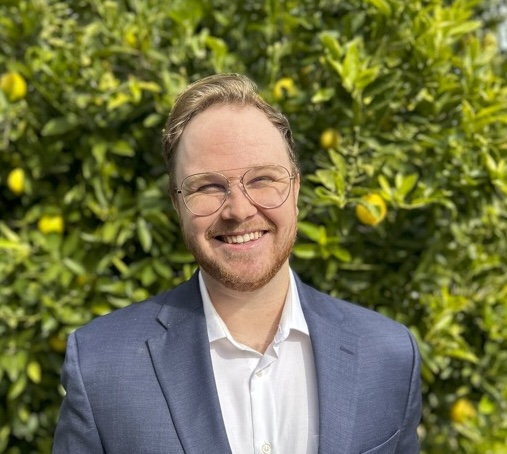

FIND AS
Focused Imaging for Aortic Stenosis
Our Team
Sites
TMED
Updates
Contact Us
Our Team
Sites
TMED
Updates
Contact Us
Our Team
The FIND-AS collaboration spans clinical research, statistics, and machine learning.
Michael Hughes
PhD - Principal Investigator
Email
Website
Google Scholar
Benjamin Wessler
MD, MS - Program Director/Principal Investigator
Profile
Lisa Small
MS - Research Project Coordinator
Shane Williams
BS - Research Assistant

Email
LinkedIn
GitHub
Veronique Recile
BS - Clinical Research Coordinator
Denise Daudelin
MPH - Co-Investigator
Profile
Ludovic Trinquart
PhD - Co-Investigator
Profile
David Kent
MD, MSc - Co-Investigator
Profile
Benjamin Koethe
MPH - Statistician
Profile
Jacob Kantrowitz
MD, PhD - Primary Care Physician
Profile